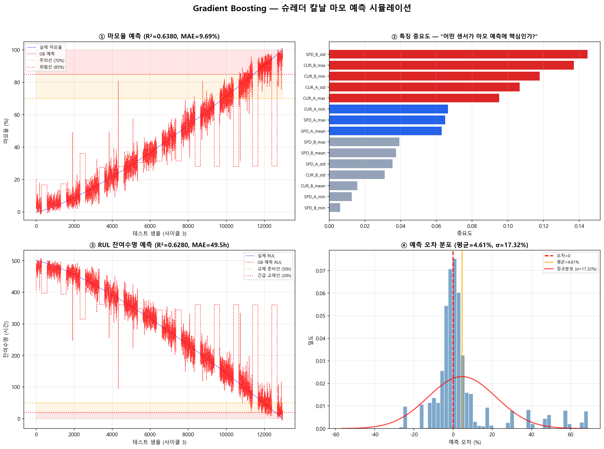

초기화: 모든 샘플의 예측값을 타겟의 평균으로 설정
예: 마모율 평균 = 45% → 모든 예측을 45%로 시작
SHREDDER AI MODEL #02
Gradient Boosting 칼날 마모 예측 상세 설명
약한 학습기를 순차적으로 쌓아 정밀한 마모율과 잔여수명(RUL)을 예측하는 앙상블 기법 완전 가이드
0 Gradient Boosting이란?
Gradient Boosting의 핵심 원리
F(x) = f₁(x) + f₂(x) + f₃(x) + ... + fₙ(x)
최종 예측 = 1단계 예측 + 2단계 오차 보정 + 3단계 오차 보정 + ... + n단계 오차 보정
Gradient Boosting은 약한 예측 모델(주로 얕은 Decision Tree)을 순차적으로 쌓아올리는 앙상블 학습 기법입니다. 각 단계의 새로운 모델은 이전 모델이 틀린 부분(잔차, Residual)을 집중적으로 학습하여, 전체 예측 성능을 점점 개선합니다.
비유: 시험 오답노트
1차 시험: 전체 범위 공부 → 80점 (틀린 문제 20개)
2차 복습: 틀린 20개만 집중 공부 → 90점 (틀린 문제 10개)
3차 복습: 남은 10개만 집중 → 95점 (틀린 문제 5개)
... 이렇게 "틀린 부분만 반복 학습"하는 것이 Gradient Boosting의 원리입니다!
핵심 개념: Sequential Weak Learner Ensemble
- Sequential(순차적): 모델을 하나씩 차례로 학습 (병렬 X)
- Weak Learner(약한 학습기): 개별 트리는 정확도가 낮음 (깊이 3~6)
- Ensemble(앙상블): 수백 개의 약한 트리를 합쳐 강한 예측기 완성
- Gradient(경사): 손실 함수의 기울기(gradient) 방향으로 오차를 줄여감
# Gradient Boosting 동작 과정 (의사코드)
1단계 모델: "전류가 높으면 마모 높음" → 오차 20%
↓ (오차를 다음 모델의 학습 데이터로 사용)
2단계 모델: "진동이 크면 추가 마모" → 오차 12%
↓ (남은 오차를 또 학습)
3단계 모델: "속도 변동도 마모에 영향" → 오차 7%
↓ ... 반복 (100~500단계)
최종 모델: 모든 트리의 예측을 합산 → 오차 3%
24개
입력 특징 (6센서 x 4통계)
300
부스팅 라운드 (트리 개수)
<5ms
추론 시간 (Edge 배포)
1 데이터 및 특징 추출
6개 센서 입력
| 센서 | 종류 | 범위 | 역할 |
|---|---|---|---|
| CUR-A | CT 전류센서 (A축) | 0~200A | 절삭 저항/부하 측정 |
| CUR-B | CT 전류센서 (B축) | 0~200A | 양축 부하 불균형 감지 |
| SPD-A | 인코더 속도센서 (A축) | 0~200 RPM | 회전 속도 변화 감지 |
| SPD-B | 인코더 속도센서 (B축) | 0~200 RPM | 양축 속도 차이 감지 |
| VIB-A | 3축 진동 가속도계 (A축) | 0~50g | 마모에 의한 진동 증가 |
| VIB-B | 3축 진동 가속도계 (B축) | 0~50g | 이상 진동 패턴 감지 |
24개 특징 추출 방법
각 센서에서 평균(mean), 표준편차(std), 최대값(max), 최소값(min) 4가지 통계량을 추출합니다. 6개 센서 x 4개 통계 = 24개 특징입니다.
# 24개 특징 추출 코드
sensor_cols = ['CUR_A', 'CUR_B', 'SPD_A', 'SPD_B', 'VIB_A', 'VIB_B']
for col in sensor_cols:
rolling = df[col].rolling(window=6) # 최근 1시간 (10분x6)
feat[f'{col}_mean'] = rolling.mean() # 평균값
feat[f'{col}_std'] = rolling.std() # 표준편차 (변동성)
feat[f'{col}_max'] = rolling.max() # 최대값 (피크)
feat[f'{col}_min'] = rolling.min() # 최소값 (저점)
# 결과: 6 센서 x 4 통계 = 24개 특징
왜 원시 데이터가 아닌 통계 특징을 사용하는가?
- 노이즈 제거: 개별 측정값은 변동이 크지만, 평균/표준편차는 안정적
- 패턴 포착: 표준편차 증가 = 불안정한 운전 → 마모 진행 신호
- 차원 축소: 수만 개 원시 데이터를 24개 숫자로 압축
- Gradient Boosting 최적화: 트리 기반 모델은 정형 특징에서 최고 성능
| # | 특징명 | 설명 | 마모 시 변화 |
|---|---|---|---|
| 1~4 | CUR_A_mean/std/max/min | A축 전류 통계 | 평균/최대 증가 |
| 5~8 | CUR_B_mean/std/max/min | B축 전류 통계 | 평균/최대 증가 |
| 9~12 | SPD_A_mean/std/max/min | A축 속도 통계 | 평균 감소, 변동 증가 |
| 13~16 | SPD_B_mean/std/max/min | B축 속도 통계 | 평균 감소, 변동 증가 |
| 17~20 | VIB_A_mean/std/max/min | A축 진동 통계 | 전체 증가 (핵심 지표) |
| 21~24 | VIB_B_mean/std/max/min | B축 진동 통계 | 전체 증가 (핵심 지표) |
2 알고리즘 동작 원리
부스팅 라운드별 오차 보정 과정
Gradient Boosting은 손실 함수의 음의 기울기(negative gradient) 방향으로 새로운 트리를 추가하여 예측을 개선합니다. MSE 손실의 경우, 이 기울기는 곧 잔차(residual = 실제값 - 예측값)가 됩니다.
부스팅 라운드 m에서의 업데이트
F_m(x) = F_{m-1}(x) + η · h_m(x)
새 예측 = 이전 예측 + 학습률(η) x 잔차를 학습한 새 트리(h_m)
잔차 계산: 실제값과 현재 예측의 차이를 구함
잔차 = 실제 마모율 - 현재 예측값 (이것이 다음 트리의 타겟!)
잔차 = 실제 마모율 - 현재 예측값 (이것이 다음 트리의 타겟!)
새 트리 학습: 잔차를 예측하는 Decision Tree를 학습
"전류 > 90A이고 진동 > 4mm/s이면 잔차 = +15%" 같은 규칙
"전류 > 90A이고 진동 > 4mm/s이면 잔차 = +15%" 같은 규칙
예측 업데이트: 학습률(η=0.05)을 곱해 기존 예측에 더함
새 예측 = 기존 예측 + 0.05 x 새 트리 예측 (조금씩 보정)
새 예측 = 기존 예측 + 0.05 x 새 트리 예측 (조금씩 보정)
반복: 2~4단계를 300회 반복
매 라운드마다 남은 오차가 줄어들어 정확도 향상
매 라운드마다 남은 오차가 줄어들어 정확도 향상
학습률(Learning Rate)의 역할
학습률 η = 0.05는 "새 트리의 기여를 5%만 반영"한다는 의미입니다.
- η가 크면 (0.3~1.0): 빠르게 학습하지만 과적합 위험 높음
- η가 작으면 (0.01~0.05): 느리지만 안정적, 일반화 성능 우수
- 규칙: η를 줄이면 n_estimators(트리 수)를 늘려야 함
Decision Tree 분기 예시
# 부스팅 라운드 1: 첫 번째 트리의 분기 규칙 (예시)
[전체 데이터]
/ \
VIB_A_mean > 4.0?
/ \
Yes → 마모 높음 No → 마모 낮음
/ \ / \
CUR_A_max>100? ... SPD_A_mean<16? ...
/ \ / \
+12% +5% +3% -2%
# 이 트리의 예측이 "잔차"에 대한 보정값
# 다음 라운드에서는 이 트리가 놓친 오차를 학습
3 XGBoost vs LightGBM 비교
Gradient Boosting의 대표 구현체인 XGBoost와 LightGBM을 비교합니다. 슈레더 환경에서의 적합성을 중심으로 분석합니다.
XGBoost (eXtreme Gradient Boosting)
- 트리 성장: Level-wise (층별 확장)
- 학습 속도: 보통
- 메모리: 상대적으로 많음
- 소규모 데이터: 우수 (과적합 적음)
- 정규화: L1/L2 내장
- 권장: 데이터 < 10만 행
LightGBM (Light Gradient Boosting Machine)
- 트리 성장: Leaf-wise (리프별 확장)
- 학습 속도: 2~5배 빠름
- 메모리: 적음 (히스토그램 기반)
- 대규모 데이터: 우수
- 범주형 특징: 네이티브 지원
- 권장: 데이터 > 10만 행
| 비교 항목 | XGBoost | LightGBM | 슈레더 적용 |
|---|---|---|---|
| 학습 속도 | 보통 | 2~5배 빠름 | 초기 소량 데이터 → 속도 무관 |
| 정확도 (소규모) | 우수 | 보통 (과적합 주의) | XGBoost 유리 |
| 메모리 사용 | 많음 | 적음 | Edge 디바이스 → LightGBM 유리 |
| 추론 속도 | 빠름 | 더 빠름 | 둘 다 <5ms 달성 가능 |
| 해석 가능성 | SHAP 지원 | SHAP 지원 | 동일 |
슈레더 프로젝트 권장 전략
초기 (데이터 < 10만 건): sklearn GradientBoostingRegressor 또는 XGBoost 사용
데이터 축적 후 (10만 건 이상): LightGBM으로 전환 검토
이 시뮬레이션에서는 sklearn의 GradientBoostingRegressor를 사용합니다 (설치 의존성 최소화).
비유: Level-wise vs Leaf-wise
XGBoost (Level-wise): 건물을 층별로 올림 → 1층 전체 → 2층 전체 → 3층... (균형 잡힌 트리)
LightGBM (Leaf-wise): 가장 효과적인 방부터 먼저 확장 → 불균형하지만 빠르게 정확도 향상
4 마모율 예측 & RUL 계산
마모율 (Wear Rate, 0~100%)
칼날 교체 시점 사이를 0%(신품) → 100%(교체 필요)로 선형 보간하여 라벨링합니다. 실제로는 전류/진동 증가에 따라 마모가 가속되므로, 센서 데이터에 의한 비선형 보정이 적용됩니다.
0~50% 양호
50~70% 주의
70~85% 경고
85~100% 위험
# 마모 등급 판정 로직
def classify_wear(wear_rate, rul_hours):
if wear_rate < 50:
return "양호", "정상 운전"
elif wear_rate < 70:
return "주의", "교체 계획 수립 권고"
elif wear_rate < 85:
return "경고", f"잔여 {rul_hours:.0f}시간 — 교체 자재 준비"
else:
return "위험", f"잔여 {rul_hours:.0f}시간 — 즉시 교체 필요"
RUL (Remaining Useful Life, 잔여수명)
RUL은 현재 칼날이 교체 시점까지 남은 운전 시간을 의미합니다. 마모율과 역의 관계에 있으며, 별도의 Gradient Boosting 모델로 직접 예측합니다.
RUL 계산 (기본)
RUL = T_life - T_elapsed - T_acceleration
잔여수명 = 칼날 수명 - 경과 시간 - 마모 가속분
왜 마모율과 RUL을 별도 모델로 예측하는가?
- 마모율: 현재 상태를 % 로 표현 → 직관적 모니터링
- RUL: 남은 시간을 직접 예측 → 정비 일정 수립에 필수
- 두 값은 밀접하지만, 운전 조건에 따라 마모 속도가 달라지므로 별도 모델이 더 정확
5 시뮬레이션 결과 분석

simulation.py 실행 결과 — 4개 서브플롯
그래프 1
마모율 예측 — "AI가 칼날 상태를 맞춰보기"
그래프에서 보이는 것
- 파란 선 = 실제 마모율 (시뮬레이션 라벨)
- 빨간 점선 = Gradient Boosting이 예측한 마모율
- 주황 점선 (70%) = 주의선 — 교체 계획 수립 시점
- 빨간 점선 (85%) = 위험선 — 즉시 교체 권고 시점
- 색상 영역 = 경고(주황)/위험(빨강) 구간 표시
빨간 점선이 파란 선에 가까울수록 예측이 정확합니다. R² 값이 1에 가까울수록 좋습니다.
마모율이 0%에서 100%로 반복되는 패턴이 보이면, 이는 칼날 교체 사이클을 나타냅니다.
위험 구간(85% 이상)에서의 예측 정확도가 특히 중요합니다 — 이 시점에서 교체 알림을 발생시키기 때문입니다.
그래프 2
특징 중요도 — "어떤 센서가 마모 예측에 핵심인가?"
그래프에서 보이는 것
- 빨간 막대 = 중요도 높음 (0.08 이상) — 핵심 센서
- 파란 막대 = 중요도 중간 (0.04~0.08)
- 회색 막대 = 중요도 낮음 (0.04 미만)
- 막대가 길수록 해당 특징이 마모 예측에 더 큰 영향
비유: 의사의 진단 근거
"환자의 진단에 가장 중요한 검사 결과는 무엇인가?"와 같습니다. 특징 중요도는 "칼날 마모 진단에 가장 중요한 센서 데이터는 무엇인가?"를 알려줍니다. 이를 통해 센서 고장 시 어떤 센서를 우선 수리해야 하는지도 판단할 수 있습니다.
그래프 3
RUL 잔여수명 예측 — "칼날 교체까지 몇 시간 남았는가?"
그래프에서 보이는 것
- 파란 선 = 실제 잔여수명 (시간)
- 빨간 점선 = 예측 잔여수명
- 주황 점선 (50h) = 교체 준비선 — 자재 발주 시점
- 빨간 점선 (20h) = 긴급 교체선 — 즉시 교체 필요
RUL이 높은 곳에서 급격히 낮아지는 패턴이 반복되면, 이는 칼날 교체 후 RUL이 리셋되는 것을 의미합니다. 실제 운영에서는 RUL이 50시간 이하로 떨어지면 교체 자재를 준비하고, 20시간 이하에서 정비 일정을 잡습니다.
그래프 4
예측 오차 분포 — "예측이 얼마나 정확한가?"
그래프에서 보이는 것
- 히스토그램 = 오차값의 빈도 분포
- 빨간 점선 (0) = 완벽한 예측선
- 주황 선 = 평균 오차 (0에 가까울수록 편향 없음)
- 빨간 곡선 = 정규분포 피팅 (σ가 작을수록 일관된 예측)
히스토그램이 0 주변에 집중되어 있으면 예측이 정확합니다.
좌우 대칭이면 편향(bias)이 없습니다. 한쪽으로 치우치면 체계적 과대/과소 예측입니다.
꼬리가 길면 일부 극단적 오차가 존재 → 이상 운전 구간에서 예측이 어려울 수 있습니다.
6 알고리즘 특징 / 장점 / 단점
핵심 특징
- 앙상블 방식: 수백 개 약한 트리를 결합
- 순차적 부스팅: 이전 오차를 보정하며 학습
- 특징 중요도: 어떤 센서가 핵심인지 자동 분석
- 경사 하강법: 손실 함수 최소화 방향으로 최적화
- 정규화 내장: L1/L2, subsampling으로 과적합 방지
장점
- 정형 데이터 최강: 센서 특징값 예측에서 딥러닝보다 우수
- 빠른 추론: <5ms로 Edge 배포에 최적
- 해석 가능: 특징 중요도, SHAP으로 예측 근거 설명
- 적은 데이터: 칼날 교체 3사이클 데이터면 학습 가능
- 결측치 처리: 트리 기반이므로 결측값에 강건
단점
- 노이즈 민감: 이상치에 과도하게 반응할 수 있음
- 과적합 위험: 트리 깊이/개수 과다 시 학습 데이터에 과적합
- 순차 학습: 병렬 학습 불가 → 대규모 데이터에서 느림
- 외삽 불가: 학습 범위 밖의 마모율 예측 어려움
- 특징 설계 필요: 원시 데이터 직접 입력 시 성능 저하
Gradient Boosting이 약한 경우
- 학습 데이터 범위 밖의 마모율 예측
- 센서 노이즈가 극심한 환경
- 비정형 데이터 (이미지, 텍스트)
- 매우 긴 시퀀스 의존성 학습
- 데이터 분포가 자주 변하는 환경
Gradient Boosting이 강한 경우
- 센서 특징값 기반 회귀/분류
- 적은 데이터로 높은 정확도 필요
- 예측 근거 설명이 필요한 산업 환경
- 실시간 추론이 필요한 Edge 디바이스
- 혼합형 특징 (연속형 + 범주형) 처리
하이퍼파라미터 가이드
| 파라미터 | 권장값 | 역할 | 조절 팁 |
|---|---|---|---|
| n_estimators | 300 | 트리 개수 | early stopping으로 자동 결정 |
| max_depth | 6 | 트리 최대 깊이 | 높이면 복잡도↑, 과적합 위험↑ |
| learning_rate | 0.05 | 학습률 | 낮출수록 안정적, n_estimators 증가 필요 |
| subsample | 0.8 | 데이터 샘플링 비율 | 0.7~0.9 사이 권장 |
| min_samples_leaf | 10 | 리프 노드 최소 샘플 | 높이면 과적합 방지, 정확도 소폭 하락 |
7 슈레더 적용 시나리오
적용 대상: 폐배터리 슈레더 칼날 마모 예측
- 센서: CUR-A/B (전류), SPD-A/B (속도), VIB-A/B (진동) — 6채널
- 목표: 마모율 0~100% 예측 + 잔여수명(RUL) 추정
- 실행 주기: 매 10분 (특징 추출 → 예측 → 등급 판정)
- 목표 정확도: R² > 0.92, RUL 오차 ±15%
운영 시나리오
데이터 수집 (3개월): 칼날 교체 3사이클 동안 6채널 센서 데이터를 10분 간격으로 수집. 교체 시점에서 마모율=100%로 라벨링.
모델 학습: 24개 특징 추출 → GradientBoostingRegressor 학습. 마모율 모델과 RUL 모델을 각각 학습.
Edge 배포: ONNX 변환 후 Edge 디바이스에 탑재. 매 10분마다 자동으로 마모율/RUL 예측.
실시간 모니터링: 대시보드에 마모율 게이지, RUL 카운트다운, 특징 중요도 차트를 표시.
알림 발생: 마모율 70% 초과 시 "주의", 85% 초과 시 "위험" 알림. RUL 50시간 이하 시 교체 자재 발주 권고.
재학습: 칼날 교체 1사이클 완료 시마다 데이터 추가 후 재학습. R² < 0.88 지속 시 비정기 재학습.
기대 효과
30%
비계획 정지 감소
15%
칼날 수명 연장
20%
정비 비용 절감
SHAP 해석 활용 예시
- "이번 예측에서 VIB_A_mean이 마모율의 35%를 설명" → 진동 증가가 주원인
- "CUR_A_max 기여도가 갑자기 높아짐" → 과부하 운전 감지
- "SPD_B_std 중요도가 0으로 떨어짐" → B축 속도 센서 고장 의심
- 특징 중요도 추이 변화로 센서 이상도 간접 감지 가능
다른 AI 모델과의 연계
- 모델 01 (LSTM Autoencoder): 베어링 이상 탐지 → 칼날 마모와 베어링 상태를 동시 모니터링
- 모델 04 (Pattern Recognition): 이물질 끼임 감지 → 이물질에 의한 급격한 마모 가속 경고
- 모델 08 (Random Forest): 파쇄 크기 예측 → 마모에 의한 파쇄 품질 변화 모니터링
- 모델 10 (Ensemble): 전체 모델 통합 분석 → 종합 설비 건강도 산출